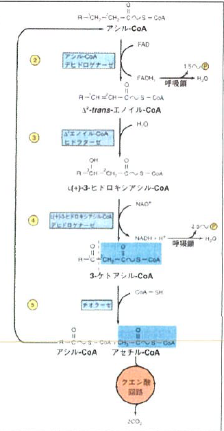
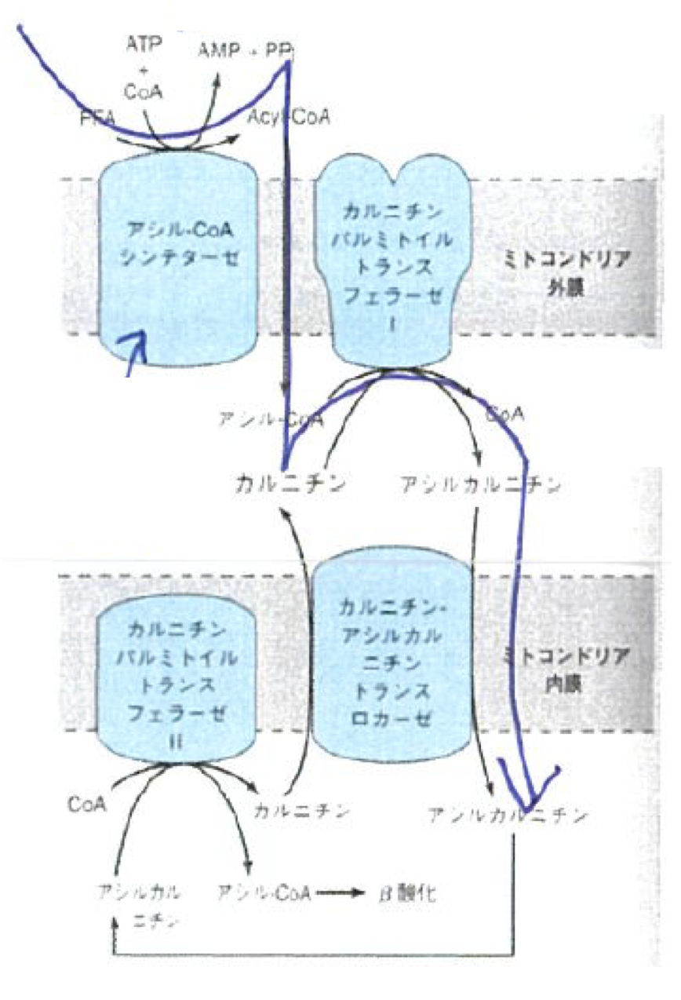

第13回 2019/7/19
- 講師：谷内江 望
- 教科書：イラストレイテッド ハーパー・生化学
- 教科書：ヴォート生化学
脂肪酸の酸化
- 脂肪酸の酸化：脂肪酸は酸化されてアセチル-CoAに分解される。
- 脂肪酸生合成：脂肪酸はアセチル-CoAから生合成される。
上記の反応は単なる逆反応ではなく、脂肪酸酸化はミトコンドリア内で、脂肪酸生合成はサイトゾルで起こるという違いがある。
脂肪酸が酸化するとアシル-CoA誘導体などの様々な物質を生成し、最終的にはATPを生成する。
脂肪酸とは
遊離脂肪酸(FFA)は、エステル化されていない脂肪酸を意味する。※「遊離＝エステル化されてない」
- 長鎖の遊離脂肪酸：
- 血漿中ではアルブミンと結合
- 細胞内では脂肪酸結合タンパク質と結合
- 短鎖：
- 水溶性が高く、脂肪酸陰イオンか、イオン化していない酸として存在している。
脂肪酸の酸化
脂肪酸がどのように酸化されてアセチルCoAになるのか？
- 脂肪酸の炭素鎖が長いものほどアセチルCoAをたくさん生み出せ、短いものほどあまり生み出せない。
- 脂肪酸がアセチルCoAになるためには、一度アシル-CoAを作る必要がある。この時、脂肪酸1molあたり1molのATPを消費し、AMPを作り出す。（ATP+AMP→2ADPという反応を考えると、この時2molのATPを消費したことと等価である。）
- アシル-CoAになると、ミトコンドリア外膜を通過することができるようになる。
- アシル-CoAとカルニチンが反応することで、アシルカルニチンができると、ミトコンドリア内膜も通過できるようになる。
- ミトコンドリア内膜に存在するカルニチンパルミトイルトランスフェラーゼⅡが「アシルカルニチン+CoA→アシルCoA+カルニチン」という反応を触媒する。この時できたカルニチンはミトコンドリア内膜を通って外に輸送されるので、内膜外膜間のカルニチン濃度は保存される。
- 任意の長さを持ったアシルCoA分子のカルボキシ末端の2番目(α)の炭素と3番目(β)の炭素の間をチオラーゼが切り出し、アセチル-CoAを遊離する。（β酸化）
- β酸化では、反応が連続して \(\mathrm{FADH_2}\) と \(\mathrm{NADH}\) を生成する。
- \(\mathrm{FADH_2}\) と \(\mathrm{NADH}\) はそれぞれ呼吸鎖に入って1.5mol/mol, 2.5mol/mol のATPを生成する。
β酸化によって飽和脂肪酸から生産できる正味のATP量

炭素数を \(2x\) とすると、β酸化自体では \(x\)mol のアセチル-CoAを作ることができるが、最後の反応では一度に \(2\) つのアセチル-CoAが作られるので、全部で \(x-1\) 回反応が起こる。
それぞれの反応で \(\mathrm{FADH_2}\) と \(\mathrm{NADH}\) が \(1\) つずつ作られ、それぞれ \(1.5\)mol,\(2.5\)molのATPを生成する。
一方で、最終的にできるアセチル-CoAは \(x\)molなので、クエン酸回路では \(10x\)molのATPが生成される。
ただし、最初に脂肪酸をアシル-CoAにする反応で、脂肪酸 \(1\)molあたり \(1\) molのATPを消費し、AMPを作り出す。なお、「ATP+AMP→2ADP」という反応を考えると、この時 \(2\)molのATPを消費したことと等価である。
以上を合計すると、以下の計算式によって炭素数 \(2x\) の飽和脂肪酸がβ酸化されることによって得られる正味のATP量が計算できる。
$$\left(1.5 + 2.5\right)\left(x-1\right) + 10x -2 = 14x-6\mathrm{mol}$$
※不飽和脂肪酸や、炭素数が奇数の場合は不規則で複雑なので省略
小テスト
| # | 問題 | 答 |
|---|---|---|
| 1 | 以下の文章の間違いを正せ。 「血漿中では長鎖の遊離脂肪酸(FFA)は何とも結合せず遊離しているが、細胞内では脂肪酸結合タンパク質と結合している。」 |
「何とも結合せず」→「アルブミンと結合して」 「遊離」という単語の意味は、エステル化されていない」という意味であることに注意！ |
| 2 | 長鎖アシル-CoAはミトコンドリアの内膜を通過することができない。長鎖アシル-CoAはβ酸化のためにどのような経路で代謝され、再びミトコンドリアマトリックス内に再構成されるか、主要な4つの酵素およびカルニチンを挙げよ。 | ・アシルCoAシンテターゼ ・カルニチンパルミトイルトランスフェラーゼⅠ ・カルニチン・アシルカルニチントランスロカーゼ ・カルニチンパルミトイルトランスフェラーゼⅡ |
| 3 | 炭素数 \(10\) の飽和脂肪酸カプリン酸 \(1\)molが好気的条件下において酸化され、生じた \(\mathrm{FADH}_2,\mathrm{NADH}\),アセチル-CoAが全てクエン酸回路と呼吸鎖で代謝されるとする。この時の正味のATP産生量を答えよ。クエン酸回路において生じた還元当量も全て呼吸鎖に入るとする。脂肪酸の活性化に必要なATP量は差し引くこととする。 | 先ほどの式を用いて、64mol |